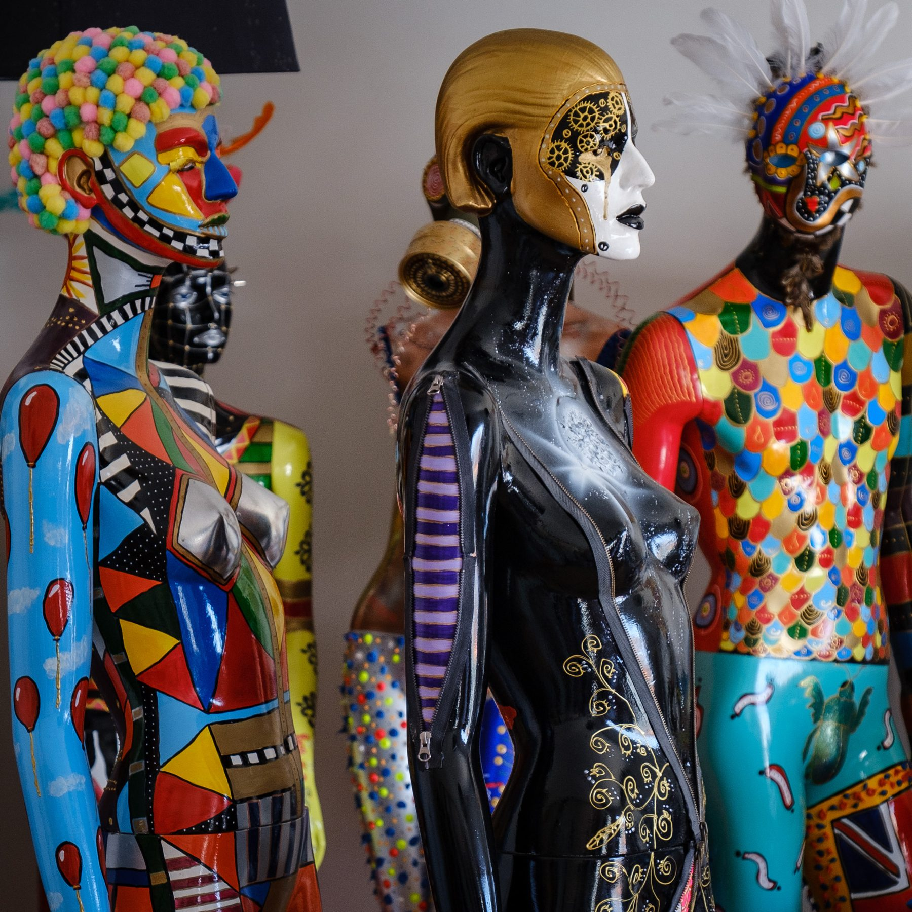
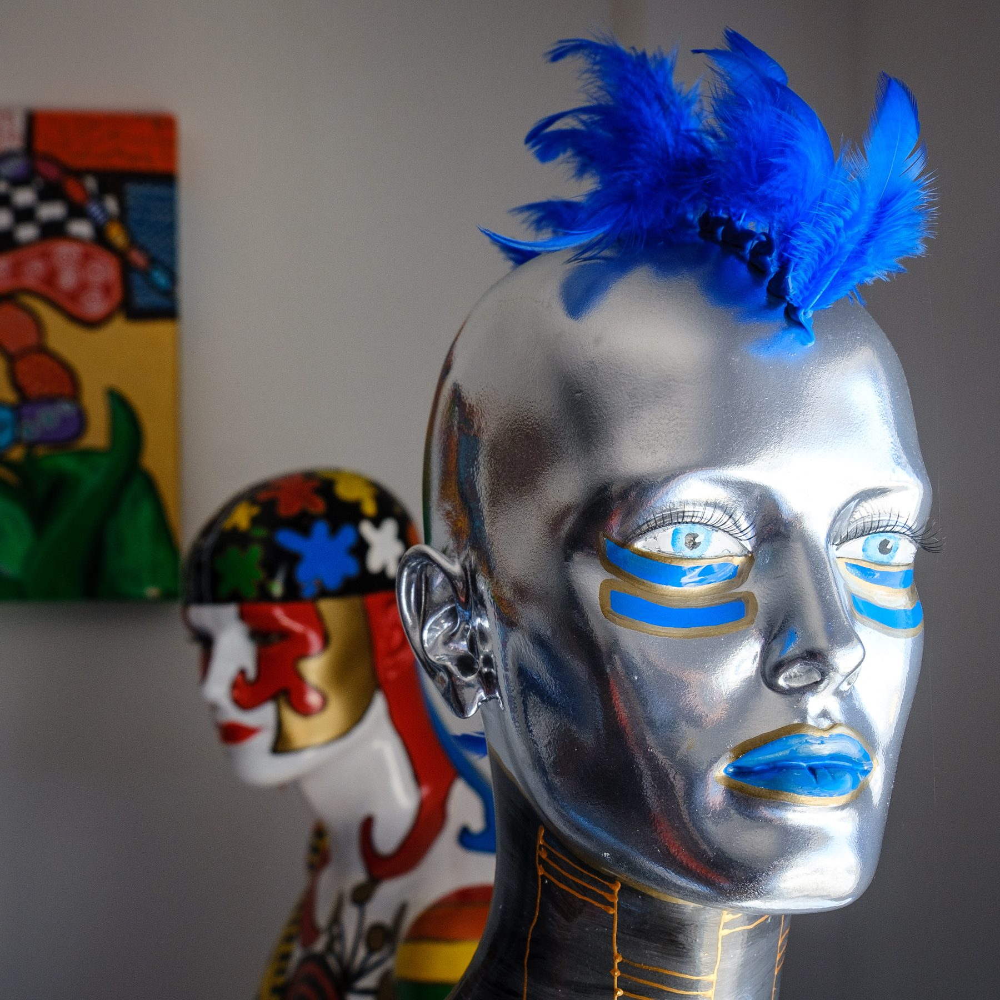
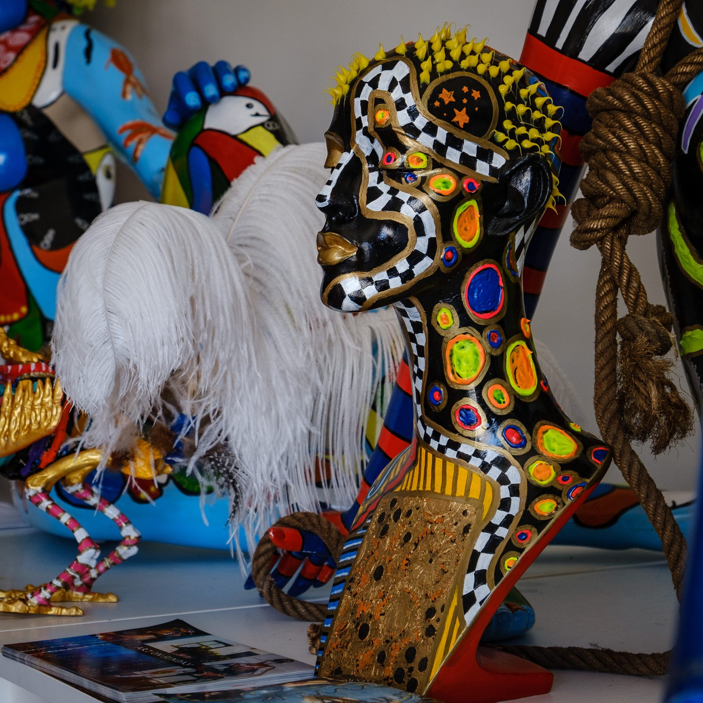
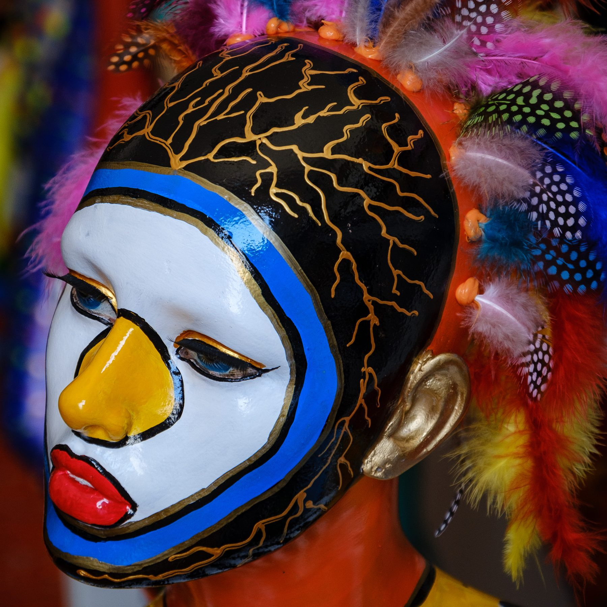
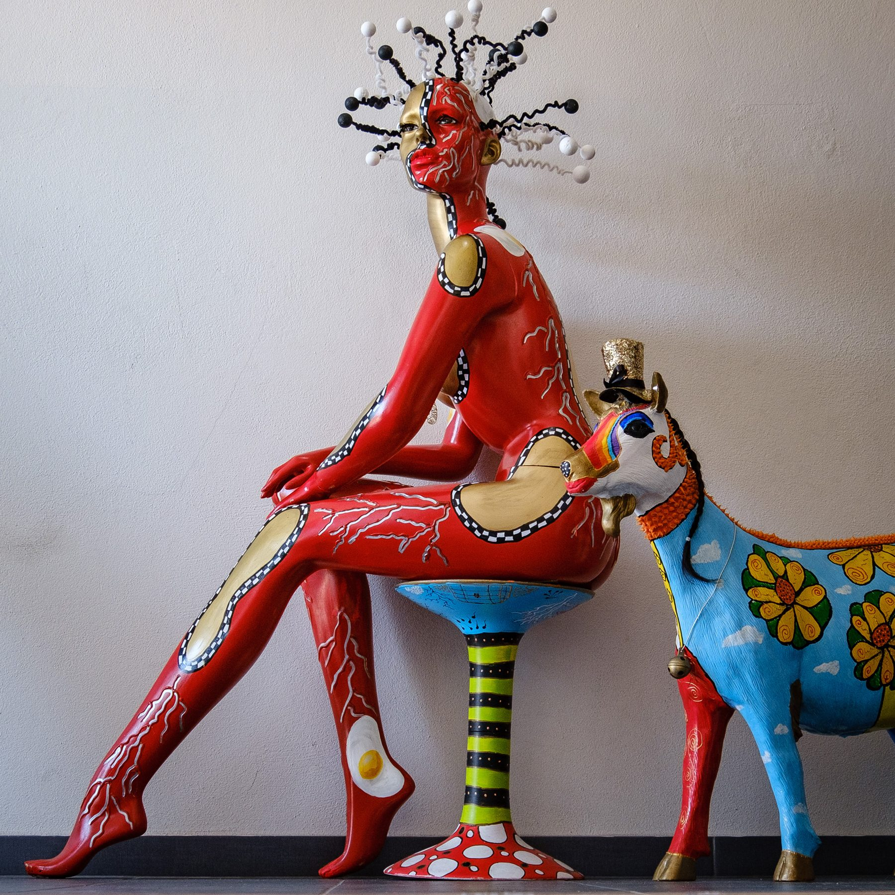
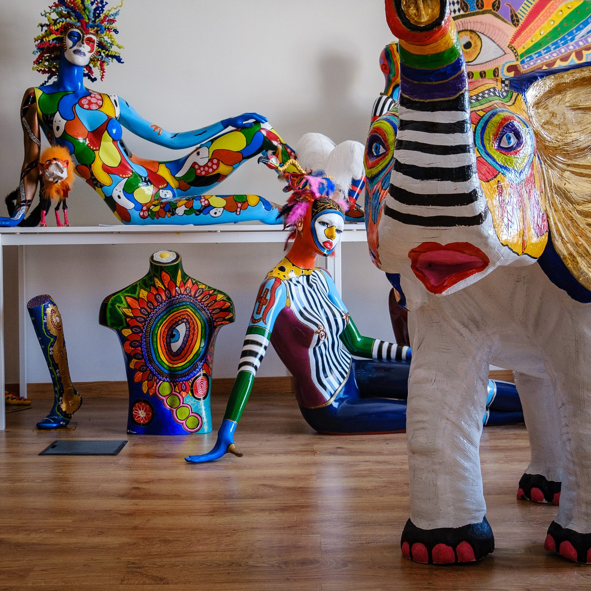
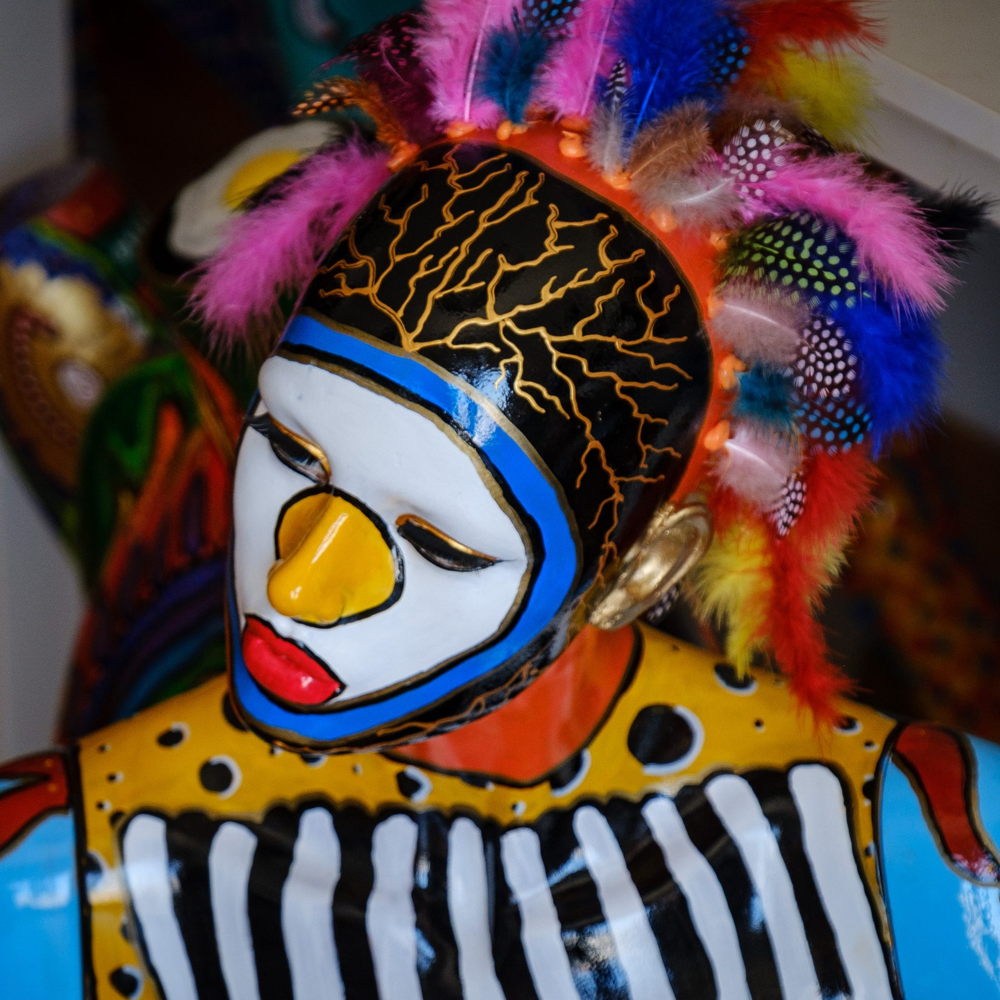

Shazequin
Shazequin é uma artista britânica radicada em Portugal cujo trabalho representa um novo conceito na arte da figura humana. Dá nova vida a manequins, bustos e estatuetas numa efervescente efusão de cor, humor, alegria e sensualidade que quebra convenções artísticas e sociais e estereótipos de género — e celebra a individualidade e a liberdade de expressão.

O percurso
Shaz, diz ela, nem sempre foi artista — mas sem dúvida que sempre foi apaixonada pela vida. Da menina inglesa cheia de sonhos à adulta temerária que se muda para a África do Sul, é a maturidade que a torna "portuguesa", como ela própria se define — e é essa fase que a leva a descobrir os caminhos da sua arte.
Foi em 2015, com um presente de aniversário pouco ortodoxo — um manequim — que tudo começou. Encarou-o como uma personagem e deu-lhe vida, pintando-o. Essa personagem, que ainda hoje a acompanha, retribuiu: trouxe à vida uma nova Shaz e abriu caminho para mostrar ao mundo a paixão e a criatividade até então adormecidas.
As caveiras KULTU
As garrafas de KULTU by Shazequin são criadas com a sua técnica de mistura de media — tintas de acrílico, esmalte, óleo e spray, contorno de silicone e uma variedade de acessórios — que as torna únicas e autênticas. Cada garrafa é, nas mãos de Shazequin, uma personagem com identidade própria.





